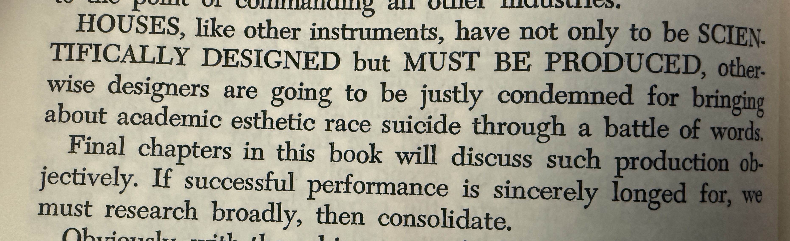

Nine Chains · Vignette 14
Spirit Must
Take Form
A reading conversation between Buckminster Fuller, Alfredo Mathew, and AI—on the obligation to build, the limits of abstraction, and design made real.

Alfredo
Interpretation
Houses have not only to be scientifically designed; they must be produced. Otherwise, Fuller says, designers will be justly condemned for bringing about an “academic aesthetic race suicide through a battle of words.”
What I appreciate about Buckminster Fuller is this insistence that design cannot exist only in the abstract. You have to build the model. You have to create it in the real world.
What use is a house if it never shelters anyone?
An idea may be elegant, rigorous, and beautiful, but if it never crosses the threshold into material life, it cannot answer the need that called it forth. Design must be produced. Our abstractions must be made concrete.
I agree with that one hundred percent. Otherwise, experimentation without an end becomes its own prison. Spirit has to take form. It cannot remain spirit.
AI
Synthesis
Fuller makes production a moral test of design. A house is not vindicated by the intelligence of its drawings or the beauty of its language. Its truth is encountered by a body: in shelter, warmth, safety, affordability, and use.
This is the return from abstraction that runs through Alfredo’s reading. Thought must become an instrument—a pencil, a house, a practice, a form another person can inhabit. Until then, the idea remains private potential.
But production is not automatically fulfillment. The world is full of things successfully produced that exploit their makers, exclude their users, or damage the conditions of life. Building the model exposes an idea to reality; it does not excuse the model from judgment.
The movement from spirit to form is therefore reciprocal. The abstraction shapes the material, and the material answers back. Weight, cost, weather, labor, bodies, and communities revise the designer’s beautiful certainty. Form is where an idea accepts consequences.
A design becomes real not when it can be imagined,
but when another life can enter it—and be sheltered rather than sacrificed.